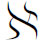

9．集合论在20世纪初的状况
康托尔的集合论是在这样一个领域中的一个大胆的步伐，这个领域，我们已经提过，从希腊时代起就曾断断续续地被考虑过。集合论需要严格地运用纯理性的论证，需要肯定势愈来愈高的无穷集合的存在，这都不是人的直观所能掌握的。这些思想远比前人曾经引进过的想法更革命化，要它不遭到反对那倒是一个奇迹。对于这个发展的可靠性的怀疑，被康托尔自己以及其他一些人提出的问题所增强。康托尔在1899年7月28日与8月28日给戴德金的两封信中(35)，问到所有的基数全体本身是否构成一个集合，因为如果是集合，它就会有大于任何其他基数的基数。他想采取相容集合与不相容集合的办法，从否定方面来回答这个问题。然而，在1897年，布拉利-福尔蒂（Cesare Burali-Forti，1861—1931）指出，所有序数的序列是良序的，它具有的序数应是所有序数的最大者(36)。于是这个序数大于所有的序数（康托尔早在1895年已注意到这个困难）。这些以及其他一些未解决的问题，叫做悖论，是在19世纪末开始被注意到的。
反对的意见确实是耸人听闻的。克罗内克几乎从一开始就反对康托尔的思想，这是我们早已看到了的。克莱因对这些思想也决不表同情。庞加莱(37)评论性地指出：“但是我们遇到某些悖论，某些明显矛盾的事情已经发生了，这些将使埃利亚的芝诺与梅加拉（Megara）学派高兴……我个人，而且这不只我一人，认为重要之点在于，切勿引进一些不能用有限个文字去完全定义好的东西。”他把集合论当作一个有趣的“病理学的情形”来谈。他并且预测（在同一文章中）说：“后一代将把［康托尔的］集合论当作一种疾病，而人们已经从中恢复过来了。”外尔称康托尔关于

的等级是雾上之雾。然而，许多卓越的数学家深为这新的理论已经起的作用所感动。1897年在苏黎世举行的第一次国际数学家会议上，赫尔维茨（Adolf Hurwitz）与阿达马指出了超限数理论在分析中的重要应用。进一步的应用不久就在测度论（第44章）与拓扑学（第50章）方面开展起来。希尔伯特在德国传播了康托尔的思想，并在1926年说(38)：“没有人能把我们从康托尔为我们创造的乐园中开除出去。”他对康托尔的超限算术赞誉为“数学思想的最惊人的产物，在纯粹理性的范畴中人类活动的最美的表现之一”。(39)罗素把康托尔的工作描述为“可能是这个时代所能夸耀的最伟大的工作”。
参考书目
Becker，Oskar：Grundlagen der Mathematik in geschichtlicher Entwicklung，Verlag Karl Alber，1954，pp．217-316．
Boyer，Carl B．：A History of Mathematics，John Wiley and Sons，1968，第25章。
Cantor，Georg：Gesammelte Abhandlungen，1932，Georg Olms（reprint），1962．
Cantor，Georg：Contributions to the Founding of the Theory of Transfinite Numbers，Dover（reprint），无日期。这包含康托尔的两篇决定性文章（1895年与1897年）的英文翻译以及茹尔丹（P．E．B．Jourdain）的很有帮助的导言。
Gavaillès，Jean：Philosophie mathématique，Hermann，1962．并包含康托尔-戴德金通信的法文翻译。
Dedekind，R．：Essays on the Theory of Numbers，Dover（reprint），1963．包含戴德金的“Stetigkeit und irrationale Zahlen”以及“Was sind und wes sollen die Zahlen”的英文翻译。两篇著作都在戴德金全集第3卷，314-334与335-391。
Fraenkel，Abraham A．：“Georg Cantor，”Jahres．der Deut．Math．-Verein．，39，1930，189-266．这是关于康托尔工作的一个历史估价。
Helmholtz，Hermann von：Counting and Measuring，D．Van Nostrand，1930．亥姆霍兹的Zählen und Messen（Wissenschaftliche Abhandlungen，3，356-391）的英文翻译。
Manheim，Jerome H．：The Genesis of Point Set Topology，Macmillan，1964，pp．76-110．
Meschkowski，Herbert：Ways of Thought of Great Mathematicians，Holden-Day，1964，pp．91-104．
Meschkowski，Herbert：Evolution of Mathematical Thought，Holden-Day，1965，第4-5章。
Meschkowski，Herbert：Probleme des Unendlichen：Werk und Leben Georg Cantors，F．Vieweg und Sohn，1967．
Noether，E．and J．Cavaillès：Briefwechsel Cantor-Dedekind，Hermann，1937．
Peano G．：Opere scelte，3卷，Edizioni Cremonese，1957-1959。
Schoenflies，Arthur M．：Die Entwickelung der Mengenlehre und ihre Anwendungen，两部分，B．G．Teubner，1908，1913。
Smith，David Eugene：A Source Book in Mathematics，Dover（reprint），1959，Vol．1，pp．35-45，99-106．
Stammler，Gerhard：Der Zahlbegriff seit Gauss，Georg Olms，1965．
————————————————————
(1) Werke，8，177．
(2) Werke，8，201．
(3) Comp．Rend．，18，1844，910-911，与Jour．de Math．，（1），16，1851，133-142。
(4) Comp．Rend．，77，1873，18-24，74-79，226-233，285-293＝Œuvres，2，150-181．
(5) Math．Ann．，20，1882，213-225．
(6) Essays，p．40．
(7) Trans．Royal Irish Academy，17，1837，293-422＝Math．Papers，3，3-96．
(8) Math．Ann．，21，1883，p．566．
(9) Revue des Sociétés Savants，4，1869，280-289．
(10) Jour．für Math．，74，1872，172-188．
(11) Continuity and Irrational Numbers，1872＝Werke，3，314-334．
(12) Math．Ann．，5，1872，123-132＝Ges．Abh．，92-102．
(13) Math．Ann．，21，1883，545-591＝Ges．Abh．，165-204．
(14) 1886，1，109-119．
(15) Theorie der complexen Zahlensystem，1867，p．46-47．
(16) The Nature and Meaning of Numbers＝Werke，3，335-391．
(17) Opere scelte，2，20-55，与Rivista di Matematica，1，1891，87-102，256-257＝Opere scelte，3，80-109。
(18) Jahres．der Deut．Math．-Verein．，8，1899，180-184；这文章不在希尔伯特的Gesammelte Abhandlungen中。见于他的Grundlagen der Geometrie，第七版，附录6。
(19) 62页，Die allgemeine Funktionentheorie，1882年的法文版。
(20) Werke，8，216．
(21) Ges．Abh．，115-356．
(22) Math．Ann．，5，1872，122-132＝Ges．Abh．，92-102．
(23) Jour．für Math．，77，1874，258-262＝Ges．Abh．，115-118．
(24) Math．Ann．，46，1895，481-512＝Ges．Abh．，283-356，特别在pp．294-295。
(25) Jahres．der Deut．Math．-Verein．，1.1890/1891，75-78＝Ger．Abh．，278-281．
(26) Brie fwechsel Cantor-Dedekind，p．34．
(27) Jour．für Math．，84，1878，242-258＝Ges．Abh．，119-133．
(28) 他的Die allgemeine Funktionentheorie（1882）一书的法文版（1887）第167页。
(29) Math．Ann．，46，1895，481-512，以及49，1897，207-246＝Ges．Abh．，282-351；这两篇文章的一个英文翻译见于康托尔，Contributions to the Founding of a Theory of Transfinite Numbers，Dover（reprint），无出版年月。
(30) 1883，Ges．Abh．，165．
(31) Cantor，Ges．Abh．，278-280．
(32) Math．Ann．，21，1883，545-586＝Ges．Abh．，165-204．
(33) Math．Ann．，59，1904，514-516．
(34) Math．Ann．，65，1908，107-128．
(35) Ges．Abh．，445-448．
(36) Rendiconti del Circolo Matematico di Palermo，11，1897，154-164与260．
(37) Proceedings of the Fourth Internat．Cong．of Mathematicians，Rome，1908，167-182；Bull．des Sci Math．，（2），32，1908，168-190＝Œuvres中的摘录，5，19-23。
(38) Math．Ann．，95，1926，170＝Grundlagen der Geometrie，7th ed．，1930，274．
(39) Math．Ann．，95，1926，167＝Grundlagen der Geometrie，7th ed．，1930，270．文章是“Über das Unendliche，”上述的引号句是从这里摘录的，而以法文出现的是在Acta Math．，48，1926，91-122。这不包含在希尔伯特的Gesammelte Abhandlugen中。